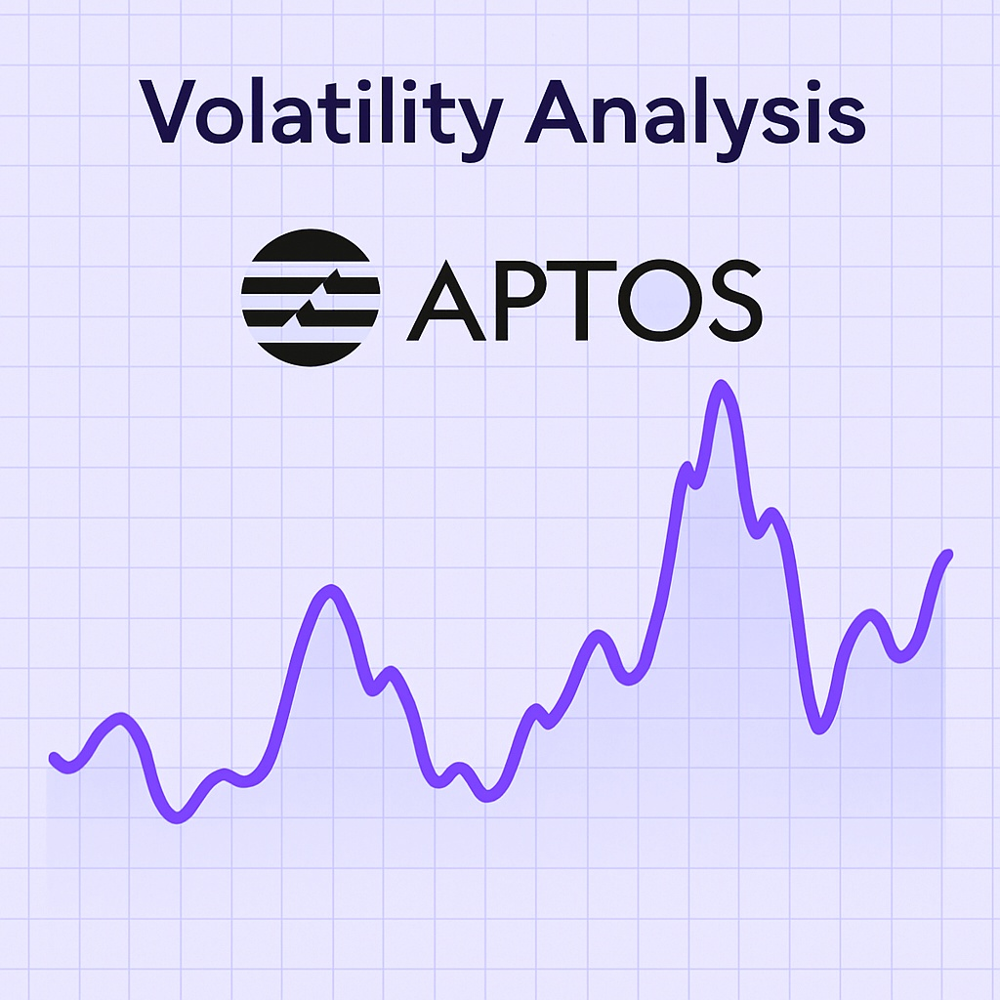

Aptos Price Forecast for End of 2025: Comprehensive Review and Insights
The material in this article is intended solely for educational purposes and should not be considered investment advice. Cryptocurrency trading carries significant risk.
Introduction
As of August 20, 2025, 01:00 AM EEST, Aptos (APT) trades near $4.94 and stands out as a leading layer-1 blockchain built for scalability and Web3 solutions. Created by Aptos Labs—founded by former Meta Diem engineers—the network employs the Move programming language to provide high throughput and advanced security. Supporting decentralized apps (dApps), stablecoins, and tokenized real-world assets (RWAs), Aptos continues to solidify its role in the decentralized web. This article delivers an in-depth outlook for APT by year-end 2025, assessing optimistic and pessimistic scenarios, growth catalysts, and possible risks in light of current market data and ecosystem developments.

Current Situation
On August 20, 2025, Aptos is valued at about $4.94, marking a 15.26% rise over the last week, despite a 4.2% dip over the past month. Over 30 days, APT has experienced moderate 6.2% volatility, with nearly half of trading days ending positive. A Fear and Greed Index of 73 points to strong investor optimism, driven by Aptos’s expanding ecosystem, now securing over $800 million in total value locked (TVL) and strategic partnerships with BlackRock and Franklin Templeton. Since its October 2022 debut at $3.09, the token has appreciated by roughly 60%, fueled by its high-performance chain and growing DeFi and RWA adoption.
Price Predictions for End of 2025
Analysts’ estimates for Aptos by December 2025 vary widely. Bearish models project a slide to $3.50–$4.00 if an expected 30–50% market correction materializes in early 2025. More balanced outlooks suggest a range of $8.00–$12.00, assuming continued Web3 traction and ecosystem expansion. Bullish forecasts point to $15.00–$20.00, especially if the market rebounds between February and April 2025. Certain projections even see APT climbing to $17.49 by year-end should institutional use and stablecoin integrations accelerate further.
Factors Driving Price Growth
- Ecosystem Growth: With over 192 projects spanning DeFi, NFTs, and gaming, Aptos’s network activity boosts token demand.
- Institutional Interest: Collaborations with BlackRock, Franklin Templeton, and leading stablecoin issuers (USDT, USDC) enhance Aptos’s reputation.
- High Throughput: Aptos handles over 150,000 TPS, with Shardines upgrades positioning it among the fastest layer-1 blockchains.
- Market Momentum: A projected crypto rally in early-to-mid-2025 could provide favorable conditions for APT price appreciation.
- Web3 Utility: Aptos’s integration with decentralized web applications and tokenized RWAs increases its adoption potential.
Risks and Downward Factors
- Market Swings: A possible 30–50% crypto market correction in early 2025 may push APT downward, undermining investor confidence.
- Regulatory Pressure: Tighter global cryptocurrency laws could restrict Aptos adoption and accessibility.
- Rising Competition: Rivals like Solana, Cardano, and Ethereum may erode Aptos’s market position if they attract stronger momentum.
Volatility Analysis
Between July and August 2025, Aptos’s price climbed from $4.21 to $4.94—a 17.3% gain—with 6.2% volatility, reflecting relative stability versus past patterns. Since its 2022 launch, annual growth highlights APT’s durability. Indicators like a 14-day RSI of 64.34 and bullish 50-day EMA trends suggest further upside potential. Anticipated market recovery in early 2025 could strengthen Aptos’s position as it deepens its presence in DeFi, RWAs, and Web3. Supported by robust fundamentals and institutional alliances, APT appears well-positioned for ongoing adoption and value growth.
Conclusion
By late 2025, Aptos’s price is expected to trade within $8.00–$15.00, with bullish markets potentially lifting it toward $20.00. Expansion of its ecosystem, institutional engagement, and Web3 development may fuel this growth, though investors should remain alert to volatility, evolving regulations, and competitive threats. Careful research and sound risk strategies remain essential before entering the market.